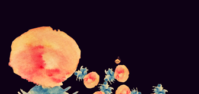

Jackson Lango
Programming / Art / Games / Instagram / GitHub
( Here are a few of the games I've made, enjoy! )
Canvasser
Play Online ( 2013 ) Strategy, Persuasion, Programmed in ActionScript 3.0

Grab your clipboard and brush up on your social skills: It’s time to raise money on the streets for charity! Canvasser is a persuasion game, and it’s all about getting the most donations possible before the day ends. Can you sustain interest, trust, and get your town to care about Evergreen Forest before it’s too late?
Writing about Canvasser
“Through its mechanics, Canvasser presents an unbiased perspective on the occupation of canvassing (on-foot fundraising), illustrating both the highs and lows of the job without being heavy-handed or overly critical.”
—Alexander Feigenbaum
“...Just might make you think twice the next time you go to reflexively brush that person on the street corner with the clipboard off.”
—Dora at jayisgames.com
“...Eerily familiar to my own experience.”
—Chris Priestman at Indie Statik
Videos about Canvasser
Rhythmica
Play Online ( 2016 ) Casual, Prototype, Jam Game, Made in Unity for web and mobile
Made in 48 hours with Conley Smith on art and Nathan Franks on sounds for Global Game Jam 2016. Featured in this Portland Mercury article!
Carrot Stew
Play Online, Source on Github ( 2016 ) Casual, Prototype, Made in Unity for web and mobile
This is a work in progress about picking fruits out of the ground and throwing them around.
Animal Rush: War!
Play Online ( 2014 ) Strategy, Arcade, Multi-player, Programmed in ActionScript 3.0
In this game, animals have taken over a post-apocaliptic city à la Tokyo Jungle, but in my game they organized into multi-specie armies that constantly fight over territory! Play against your friend or the computer in this strange new world!
Organ Donor
Play Online ( 2014 ) Casual, 'Artsy', Programmed in ActionScript 3.0
This is little game I made for a organ-donation-themed game jam.
It's A Monster!
Play Online ( 2010 ) Action, Brawler, Programmed in ActionScript 2.0
This is a game about being a monster and eating and throwing things.